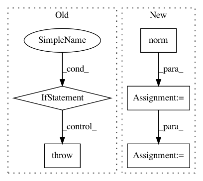

bee606d2a668d462c9eea4cc23d7cfd8fbeb36a3,geomstats/geometry/hyperbolic_space.py,HyperbolicMetric,log,#HyperbolicMetric#Any#Any#,315
Before Change
- gs.einsum("ni,nj->nj", coef_2, base_point))
return log
if(self.point_type=="Poincare"):
raise NotImplementedError(
"The computation of the poincare log"
" is not implemented.")
def dist(self, point_a, point_b):
Geodesic distance between two points.
After Change
if self.point_type=="poincare":
kpx = self.add(-base_point, point)
norm_kpx = kpx.norm(2, -1, keepdim=True).expand_as(kpx)
norm_base_point = base_point.norm(2, -1, keepdim=True).expand_as(kpx)
res = (1 - norm_base_point ** 2) * ((gs.arc_tanh(norm_kpx))) * (kpx / norm_kpx)
if (0 != len((norm_kpx == 0).nonzero())):
res[norm_kpx == 0] = 0
In pattern: SUPERPATTERN
Frequency: 3
Non-data size: 5
Instances
Project Name: geomstats/geomstats
Commit Name: bee606d2a668d462c9eea4cc23d7cfd8fbeb36a3
Time: 2020-01-15
Author: hadizaatiti@gmail.com
File Name: geomstats/geometry/hyperbolic_space.py
Class Name: HyperbolicMetric
Method Name: log
Project Name: OpenNMT/OpenNMT-tf
Commit Name: 01568d0d6eb789dc0a026d28bd232958babee07f
Time: 2017-11-06
Author: guillaumekln@users.noreply.github.com
File Name: opennmt/decoders/self_attention_decoder.py
Class Name: SelfAttentionDecoder
Method Name: _self_attention_stack
Project Name: keras-team/keras
Commit Name: 11685f68d52266188abc117687493c80a5580718
Time: 2015-06-25
Author: lchen3@gmail.com
File Name: keras/layers/recurrent.py
Class Name: MutatedRNN_1
Method Name: __init__